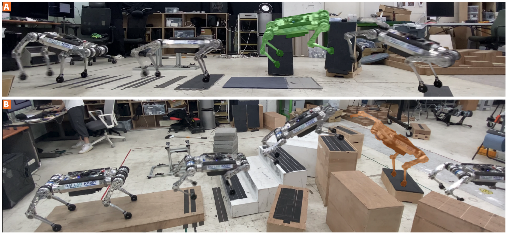

Hyeongjun KimHyunsik OhJeongsoo ParkYunho Kim Donghoon YoumMoonkyu JungMinho LeeJemin Hwangbo
Korea Advanced Institute of Science and Technology (KAIST)

Abstract
High-speed legged navigation in discrete and geometrically complex environments is a challenging task because of
the high–degree-of-freedom dynamics and long-horizon, nonconvex nature of the optimization problem. In this work,
we propose a hierarchical navigation pipeline for legged robots that can traverse such environments at high speed.
The proposed pipeline consists of a planner and tracker module. The planner module finds physically feasible
foothold plans by sampling-based optimization with fast sequential filtering using heuristics and a neural network.
Subsequently, rollouts are performed in a physics simulation to identify the best foothold plan regarding the
engineered cost function and to confirm its physical consistency. This hierarchical planning module is
computationally efficient and physically accurate at the same time. The tracker aims to accurately step on the
target footholds from the planning module. During the training stage, the foothold target distribution is given by
a generative model that is trained competitively with the tracker. This process ensures that the tracker is trained
in an environment with the desired difficulty. The resulting tracker can overcome terrains that are more difficult
than what the previous methods could manage. We demonstrated our approach using Raibo, our in-house dynamic
quadruped robot. The results were dynamic and agile motions: Raibo is capable of running on vertical walls,
jumping a 1.3-meter gap, running over stepping stones at 4 meters per second, and autonomously navigating on
terrains full of 30° ramps, stairs, and boxes of various sizes.
@article{kim2025parkour,
title={High-speed control and navigation for quadrupedal robots on complex and discrete terrain},
author={Kim, Hyeongjun and Oh, Hyunsik and Park, Jeongsoo and Kim, Yunho and Youm, Donghoon and Jung, Moonkyu and Lee, Minho and Hwangbo, Jemin},
journal={Science Robotics},
volume={10},
number={102},
pages={eads6192},
year={2025},
publisher={American Association for the Advancement of Science}
}